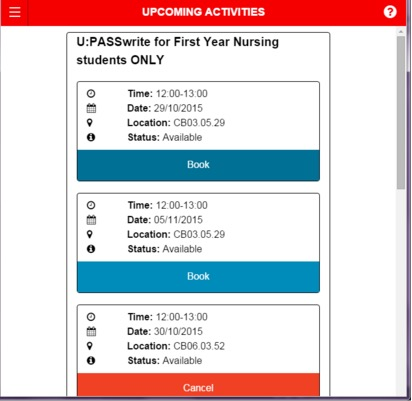
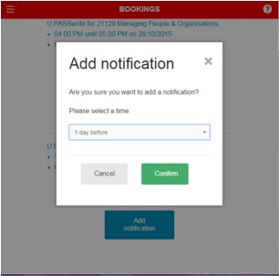

How do I ...?
-
Make a booking
1. Navigate to the 'Activities' Page through the Navigation Bar
2. Choose the session you want to book it in for, and click the blue 'Book' button.
3. Confirm your booking. The status bar will let you know that your booking has been confirmed.

-
Cancel a booking
1. As above, navigate to the 'Activities' page through the navigation bar.
2. Press one 'Cancel under the booking you wish to cancel.

Second Option:
1. Navigate to 'Upcoming Bookings' from the navigation Bar

2. Click the 'Cancel' button under the booking you with to cancel
3. Confirm the cancellation. The status bar will let you know that your booking has been cancelled.

-
Setting a Notification
1. As above, navigate to the Booking you wish to set a notification for through the navigation bar.
2. Click on 'Add notification' under the Booking you wish to add a notification for.
3. Select the time from the drop down menu.
4. Click confirm. The status bar will let you know that a notification will be added. (Note: to cancel a notification, it is exactly the same process, however in step 2, there will be an option called ‘Delete notification’.)